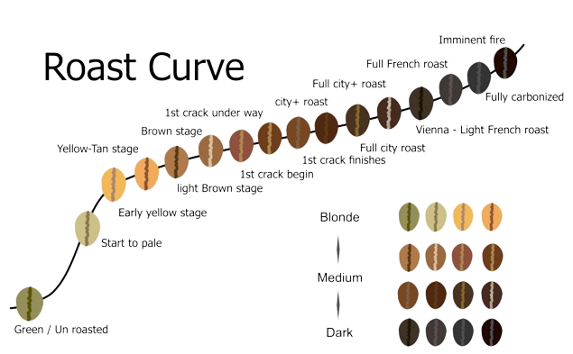
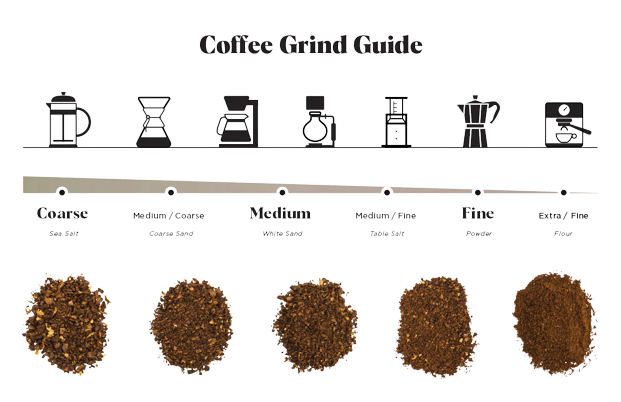

Table of Content
Intro
There's something magical about the aroma of freshly brewed coffee that can instantly awaken your senses and set the tone for the day ahead. The art of making coffee is more than just a routine; it's a sensory experience, a science, and a cherished ritual for coffee enthusiasts around the world. Whether you're a novice or a seasoned coffee aficionado, this guide will take you on a journey through the intricate and rewarding world of crafting the perfect cup of coffee.
Choosing Your Beans
The foundation of a great cup of coffee lies in selecting the right beans. Coffee beans come in various origins, each with its unique flavors, aromas, and characteristics. The two primary types of coffee beans are Arabica and Robusta. Arabica beans are known for their nuanced flavors and smoothness, while Robusta beans offer a stronger, more robust taste. Additionally, explore single-origin beans to appreciate the distinct qualities of specific regions.
Roasting For Flavor
Coffee roast is the transformative process of heating green coffee beans, turning them into the aromatic brew we enjoy. It encompasses various roast levels, including light, medium, and dark, each offering distinct flavor profiles. The duration of roasting and careful cooling are crucial factors in determining the final taste. Storing roasted beans in airtight containers ensures freshness. Ultimately, coffee roast customization allows you to explore a wide range of flavors and find your preferred taste, making coffee a truly versatile and satisfying beverage..
 by Pongpinun Traisrisilp published on shutterstockGrinding for Greatness
Once you've acquired your preferred coffee beans, it's time to grind them. The grind size greatly influences the extraction process. A finer grind is ideal for espresso machines, while a coarser grind works well for methods like French press or cold brew. Invest in a good quality burr grinder to ensure consistent particle size, which is essential for even extraction.
 by solidgroundroasters.comCoffee Brewing Methods
The way you brew your coffee can significantly impact its flavor profile. Here are some popular brewing methods to consider:
- French Press: This method involves steeping coarsely ground coffee in hot water and then pressing the grounds with a plunger. It's known for its full-bodied and robust flavor.
- Pour-Over: With a pour-over, hot water is manually poured over coffee grounds in a filter. This method allows for precise control over extraction and brings out intricate flavors.
- Espresso: Espresso involves forcing hot water through finely-ground coffee under high pressure. It forms the base for various coffee beverages and has a concentrated, intense flavor.
- AeroPress: The AeroPress combines the principles of immersion and pressure to produce a rich yet smooth cup of coffee. It's portable and versatile, making it a favorite among travelers.
- Cold Brew: Cold water is used to steep coffee grounds over an extended period, usually 12-24 hours. This results in a smooth, less acidic coffee concentrate that's perfect for iced drinks.
Mastering the Brewing Process
Regardless of the method you choose, there are a few key aspects to master:
- Water Temperature: Water that's too hot can lead to over-extraction and bitterness, while water that's too cold can result in under-extraction and weak flavor. The ideal temperature range is usually between 195°F to 205°F (90°C to 96°C).
- Brew Time: The amount of time the coffee and water are in contact affects the flavor. Experiment with brew times to find your preferred strength and taste.
- Water-to-Coffee Ratio: The ratio of coffee to water determines the coffee's strength. A common starting point is a ratio of 1 to 15 (1 gram of coffee to 15 grams of water), but feel free to adjust based on your preferences.
- Blooming: When using freshly ground coffee, allowing it to "bloom" by pouring a small amount of water over it and letting it sit for about 30 seconds releases trapped gases and enhances flavor extraction.
The Finishing Touches
After brewing, consider the final touches that can elevate your coffee experience:
- Milk and Sweeteners: Add milk, cream, or alternative milk options to create your preferred level of creaminess. Experiment with sweeteners like sugar, honey, or syrups to find the right balance.
- Latte Art: If you're feeling adventurous, try your hand at latte art. Pouring steamed milk into espresso in a specific way can create beautiful designs on the surface of your coffee.
- Flavor Additions: Spices like cinnamon or nutmeg, as well as extracts like vanilla or almond, can introduce delightful new dimensions to your coffee.
In Conclusion
The art of making coffee is a journey filled with exploration and experimentation. From selecting the perfect beans to mastering different brewing methods and adjusting variables, each step contributes to the creation of a unique and satisfying cup of coffee. As you delve into this world, remember that the joy lies not only in the final outcome but in the process itself. So, grab your favorite beans, gather your tools, and embark on a flavorful adventure that will undoubtedly awaken your senses and delight your taste buds.